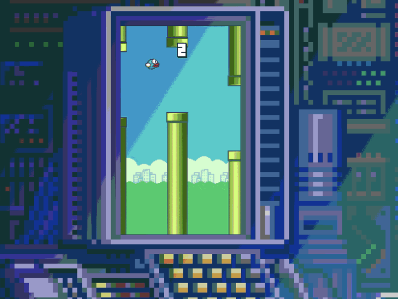

P0rc3lain
A fully-featured 3D game engine built from scratch in pure Swift
using Metal 2. Implements both forward and deferred rendering
pipelines with physically-based rendering (PBR), shadow mapping
with PCF for point, spot, and directional lights, skeletal
animation, and post-processing effects including bloom, motion
blur, and vignette. Features a node-based scene graph, USDZ model
loading, normal mapping, soft shadow ambient occlusion, and
particle systems. The engine powers a complete chess game with
mouse picking, camera controls, and full rule implementation
(castling, en passant, promotion). Designed as a learning platform
for exploring modern rendering techniques and engine architecture
on Apple platforms.

Flappy Bird Clone
A pixel-perfect recreation of the viral mobile game built as a
Python programming exercise. Implements the core 'flap through
pipes' mechanics using Pygame 2.0.1, with both mouse and keyboard
controls. Features sound effects, collision detection,
customizable bird and background colors via keyboard shortcuts,
and smooth gameplay animations. The project demonstrates
fundamental game development concepts including game loops, sprite
management, physics simulation, and input handling. Open-sourced
under MIT license, serving as both a nostalgic tribute and a
practical example of 2D game development in Python.

Chess
A complete chess implementation built on top of a custom 3D
engine, showcasing real-time rendering capabilities and game logic
integration. Features all standard chess moves including castling,
en passant, and pawn promotion. Implements mouse-based piece
picking using ray casting, keyboard-driven camera controls, and
smooth piece animations. The game demonstrates practical
application of 3D engine features: scene management, object
interaction, and real-time user input processing. Built in Swift
with Metal for rendering, serving as both a playable game and a
technical demonstration of custom engine capabilities.

Mine - CPU-based path tracer
A physically-based CPU ray tracer built in C++ and Objective-C++
to explore light transport theory and realistic rendering.
Simulates realistic lighting through multi-bounce ray tracing,
Monte Carlo integration, and physically-based BRDFs. Supports
multiple geometric primitives (spheres, planes, disks, triangles),
bitmap textures, and USDZ model loading. Implements soft shadows,
glossy reflections, and various sampling techniques for smooth,
artifact-free images. Leverages multithreading to efficiently
utilize CPU cores without GPU acceleration. While not
production-grade, this project served as a foundation for
understanding rendering fundamentals before transitioning to
GPU-accelerated Metal implementations.

NGIN - #2 Graphics engine
A cross-platform 3D rendering engine built in modern C and C++ to
demonstrate core graphics architecture across Windows, macOS, and
iOS. Features both forward and deferred rendering pipelines,
shadow mapping with PCF for directional and spot lights, HDR tone
mapping, Gaussian bloom, normal mapping, and frustum culling for
performance optimization. Supports multiple simultaneous light
sources (point, directional, spot) with physically-accurate
attenuation. Implements model loading via Assimp, multiple
resolution support, and post-processing effects including
vignette. Designed as a proof-of-concept for low-level engine
engineering and multiplatform OpenGL/GLES rendering, showcasing
modular shader architecture and scene management.

MSEngine - #1 Graphics engine
An experimental iOS 3D graphics engine developed in Objective-C
and Objective-C++ as a foundation for learning real-time rendering
on mobile platforms. Implements a basic rendering pipeline with
Phong lighting model (ambient, diffuse, specular), texture
mapping, transparency support, and multiple light sources with
distance-based attenuation. Features touch-based object
interaction and gyroscope-driven camera controls for immersive
mobile experiences. Includes object loading, standard
transformations (translation, rotation, scaling), and material
system integration. Built with OpenGL ES, this early project
represents the starting point of my journey into 3D graphics
programming and established core concepts later applied in
Metal-based engines.

Linked-List x86 ASM
A classic linked list data structure implemented entirely in
x86-64 assembly language with a C-compatible interface.
Demonstrates low-level memory management, pointer manipulation,
and calling convention compliance at the instruction level.
Provides standard operations including insertion, deletion,
iteration, and comparison through an idiomatic C API. Features
proper memory allocation/deallocation, iterator pattern
implementation, and full test coverage via Google Test. Supports
macOS and Linux 64-bit platforms. This project bridges high-level
data structure concepts with bare-metal assembly programming,
offering practical insight into how compilers translate data
structures into machine code and manage memory at the lowest
abstraction level.

RHCE preparations
A comprehensive exam preparation repository for the Red Hat
Certified Engineer (RHCE) EX294 certification focused on Ansible
automation. Contains practice exercises based on official Red Hat
study objectives, along with complete infrastructure provisioning
scripts for creating a realistic exam environment. Features
hands-on scenarios covering playbook development, role creation,
variable management, templating, and system automation tasks.
Includes five-node cluster setup (one controller, four managed
hosts) with pre-configured networking and authentication. This
repository has reached a broad audience in the DevOps community,
serving as a practical study guide that combines theoretical
knowledge with real-world automation scenarios.